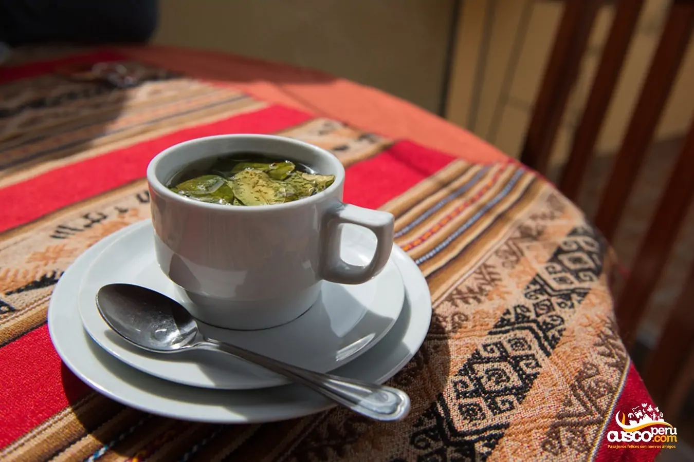
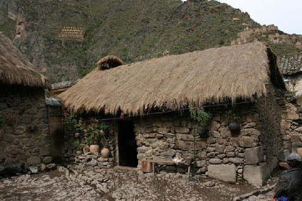
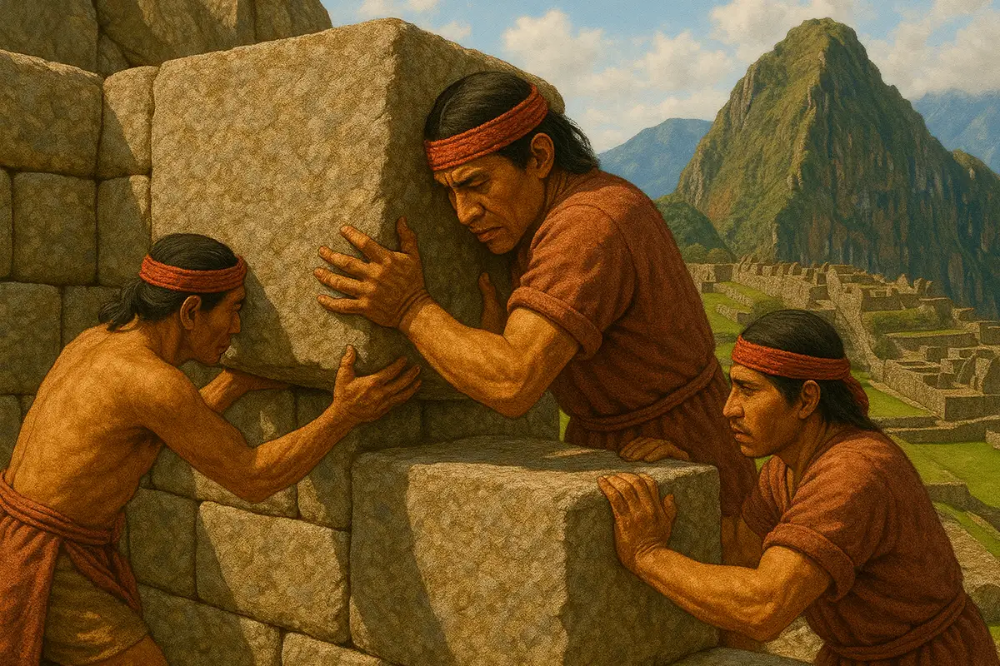

What Can You Do?
IS THAT FOOD?
Throughout the Incan empire, travelers can be exposed to a variety of landmarks connecting deeply to the region’s rich culture. Check out the local cuisine utilizing a variety of corn and seafood based dishes as well as acquired flavors of Alpaca and Guinea Pig. Maīz (fermented corn), potatoes, and quinoa are also staples of food and beverages; unique smells and must try tastes circulating throughout. Coca leaves are also treasured here as a remedy for altitude sickness; valued among royalty as a common ingredient in various teas (imaged on the right).

Could I live here?

The Andean people of the Inca Empire were mostly farmers but lived in stone huts on the side of hills and mountains. You can help make terraces and dig canals like the men, women and children would do in the standard family of the Inca Empire. The people would tie string and ropes into messages called quipu (on the right) rather than developing an written language.

Get a Job

Due to the fact of no currency, the people pay with labor. They lived by the philosophy of "Ama Sua, Ama Llulla, Ama Quella." It translate to "Thou shalt not steal, thou shalt not lie, and thou shalt not be lazy," so don't be lazy and get a job. You to could get a job as apart of the Mita system being a farmer/herder, millary soldier, or even and construction worker. Cities like Cusco were created thanks to the mita. In return you are given the right to live and are given food and necessities to live as well as protection from people that do not follow.